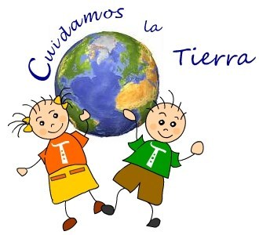
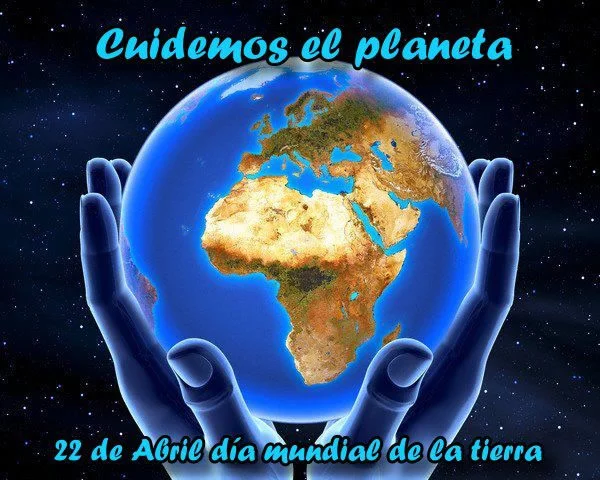
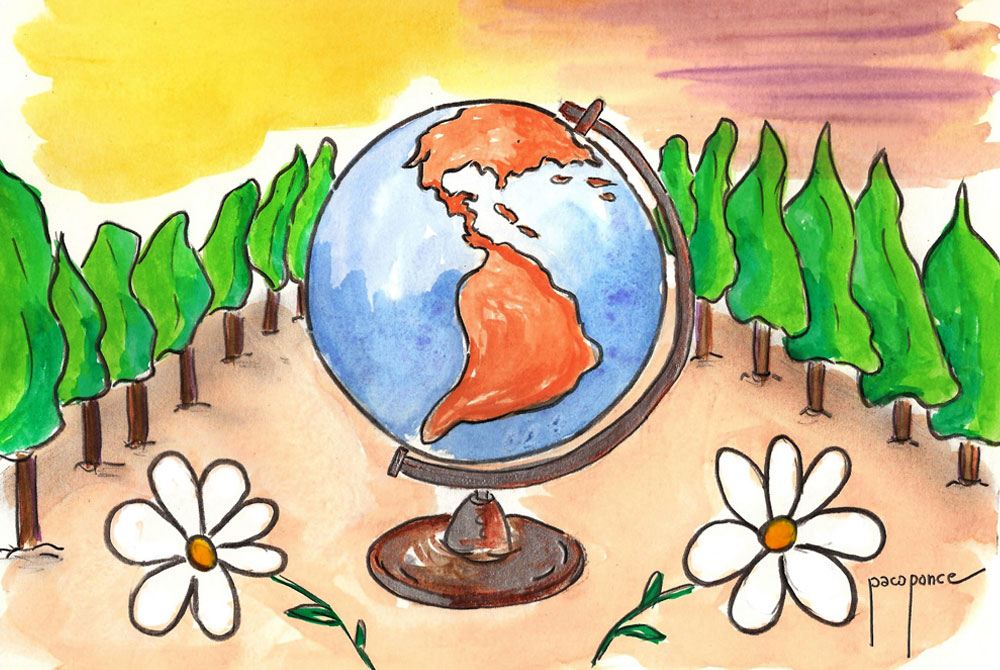
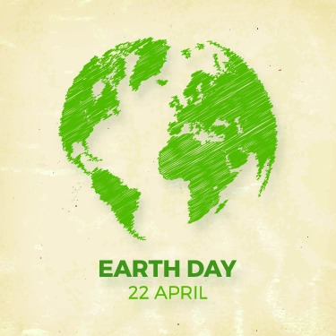
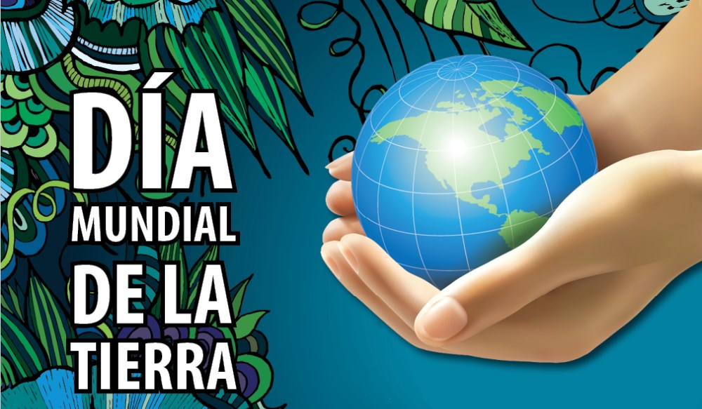

DIA INTERNACIONAL DE LA MADRE TIERRA
- 
- 
- 

- 
- 
Realizado por:
José Daniel Martínez Ruíz
Semestre:4to Grupo:"E"
Especialidad
Programación
Sunmódulo:
Desarroll aplicaciones móviles
Docente
Lic. José Antonio Gómez Hernández
Semestre:4to Grupo:"E"
Programación
Desarroll aplicaciones móviles
Lic. José Antonio Gómez Hernández